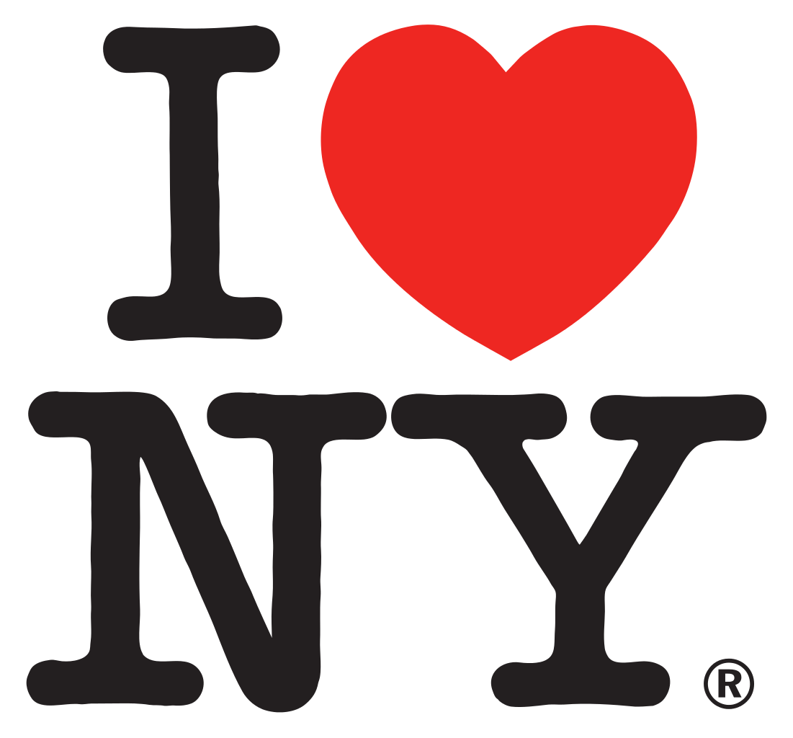
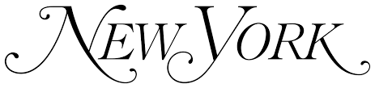
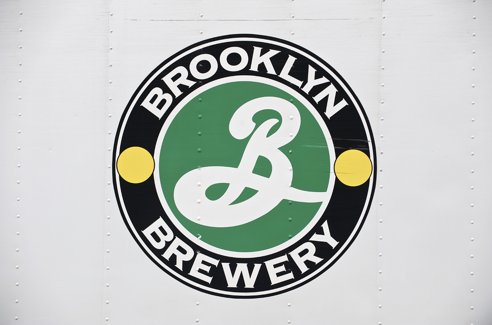
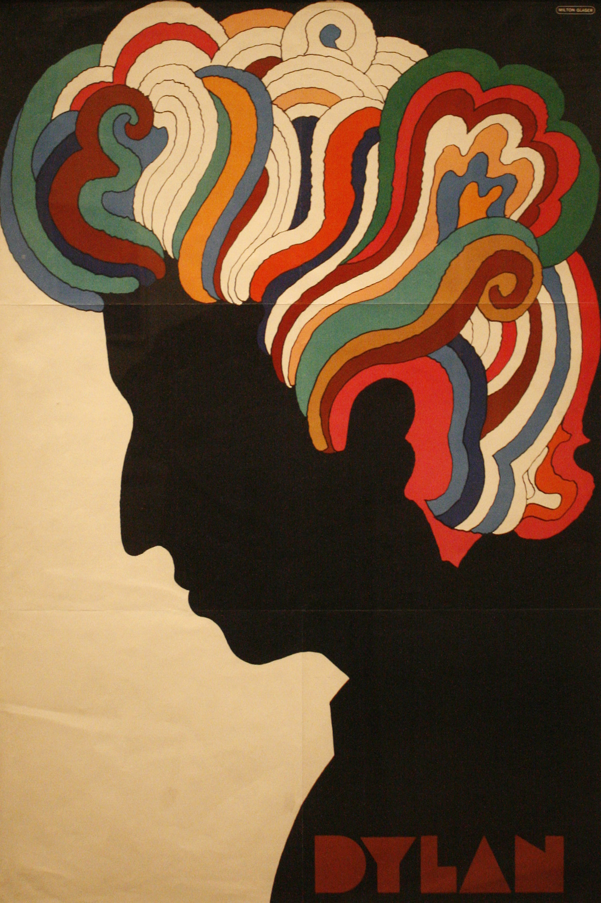

In 1977, Glaser was commissioned by the New York Department of Commerce to develop a logo for New York State. Little did he know his pro-bono sketch of "I Love New York" would eventually grow to be it's most recognizable symbol.
The logo has now circulated the world multiple times over. It was especially prominent in the weeks following the 9/11 terrorist attacks on New York City, and it became a symbol for unity and strength.
Glaser's original draft was sketched in a taxi on the way to a meeting. That draft is now in the permanent collection of the Museum of Modern Art in New York.
Being such a universal and easy-to-replicate logo, the State of New York has filed thousands of copyright and trademark complaints. The vast majority of the logo's appearances are not licensed.
In 1977, Glaser was commissioned by the New York Department of Commerce to develop a logo for New York State. Little did he know his pro-bono sketch of "I Love New York" would eventually grow to be it's most recognizable symbol.
The logo has now circulated the world multiple times over. It was especially prominent in the weeks following the 9/11 terrorist attacks on New York City, and it became a symbol for unity and strength.
Glaser's original draft was sketched in a taxi on the way to a meeting. That draft is now in the permanent collection of the Museum of Modern Art in New York.
Being such a universal and easy-to-replicate logo, the State of New York has filed thousands of copyright and trademark complaints. The vast majority of the logo's appearances are not licensed.
Other Works
DC Comics

NY Magazine

Brooklyn Brewery
Mad Men
Stony Brook

Bob Dylan